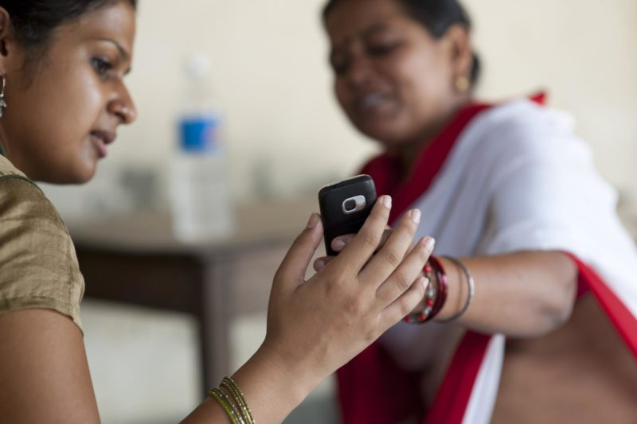

For mobile data collection-based programs aiming to amplify their impact or increase their direct client interaction, short message service (SMS) has become an increasingly effective form of mobile engagement.
SMS technology can be used as a standalone data collection solution or as a way to enhance existing communication channels with targeted notifications or periodic reminders.
And for projects using CommCare, SMS notifications have helped to improve the efficiency, communication, and data collection of organizations and individuals providing frontline services.
With a growing number of users of mobile data collection tools, targeted messaging campaigns can offer programs a direct line of contact to the people they aim to serve. When you implement targeted messaging into your data collection plan, you will be able to connect more readily with your users and beneficiaries.
What are the benefits of using SMS?
When implemented properly, SMS notifications can spur heightened participation, improve relationships between frontline workers and beneficiaries, and offer immediate feedback to users. In fact, some research suggests that regular motivational messages could produce changes in behavior that lead to improved treatment adherence and clinical outcomes.
Our messaging service was originally built in response to the need to communicate with patients in clinical trials, send out medication reminders and appointment confirmations, and coordinate staff communications and activities. As such, it supports two-way messaging, broadcast messages, and reminders that can be scheduled for recipients based on configurable data elements such as date of registration or language preference.
Since its inception, many programs have used CommCare Messaging as both a core data collection workflow and as a complement to existing mobile data collection applications.

How can you use SMS to transform your program?
Scheduled Reminders
One of the most common and impactful use cases for SMS notifications is scheduled reminders to target recipients. These messages are commonly used for medication or appointment reminders and can be configured as conditional alerts based on specific rule criteria intended for specific audiences.
With these more tailored, targeted messages, programs can amplify existing workflows, reinforce positive behaviors and/or improve adherence amongst their target users or beneficiaries.
For example, a program might send a message to remind a pregnant woman to visit her local clinic for her exam or send an alert to a patient who has a missed a dose of their medication. In one case involving a supply chain and logistics project, reminders were used to incentivize action by informing users to restock their inventory when supplies were running low.
Awareness messages
These can range from targeted messaging campaigns to more general broadcast notifications or alerts.
Recurring informational messages can be used for a variety of purposes, including:
- training & capacity-building of end users or knowledge-sharing of industry best practices
- increasing awareness of target populations
- encouraging behavior change and/or reinforcing positive behaviors among recipients
For example, a project focusing on HIV risk reduction among IV drug users used SMS alerts to send daily informational messages to their clients to encourage non-risky behaviors.
SMS alerts are also used to notify a wide range of stakeholders of programmatic status updates or changes. For instance, a program may choose to send a message to all beneficiaries in a village to inform them of an upcoming event like an immunization drive.
You can also segment these audiences, as a large-scale project in India did, sending broadcast messages to primary users and secondary support staff informing them when a new version of the application had been released. This approached helped improve the efficiency of top-down communication and enhance version uptake.
Confirmation messages
Confirmation messages are generally triggered by an event and can be used as a means to verify that an action has been taken. These messages offer programs the opportunity to provide immediate feedback to users and clients.
For example, a program may choose to send a confirmation message to a user upon their enrollment/registration to both welcome the user to the program as well as verify that their contact information is correct and that they are able to receive messages.
Surveys
Survey-based messages can be used to both collect data and gather feedback from end users and beneficiaries. Surveys can cover a wide range of topics, from broad demographic questions to specific feedback on services delivered.
In many cases, data from these survey responses could serve to supplement or refresh your case data, updating relevant patient cases and reports. For example, in the same HIV risk reduction program mentioned above, clients would receive a weekly survey-based message that allowed them to report the number of risky behaviors they engaged in during the week.
The responses that the survey recipients provided over message fed back into the program’s mobile data collection tool and updated case information for the relevant patient.

Planning your SMS strategy
In the right context, SMS can be a powerful tool to supplement, amplify, or inform your mobile data collection program. As with any technology solution, however, thorough planning is required to make SMS fit the needs of your specific project.
Before creating your messaging campaign strategy, consider the following:
Sustainability
SMS programs can range from one-time broadcast events to extended messaging campaigns. Whether you’re reaching a targeted population or operating at scale, your solution will benefit from a clear and dedicated budget.
Accessibility
If you’re planning to send messages directly to your clients or beneficiaries, it will be important to identify trends in phone ownership or access. Your messaging approach could change depending on whether or not your target recipients own their own mobile devices. In cases where the recipient is generally the primary phone owner, you might lean towards more specificity in your message content - for example, addressing the intended recipient by name. On the other hand, if your beneficiaries’ registered phone numbers tend to belong to a relative or someone outside the immediate household, general awareness messages might be more appropriate.
Target Recipients
The profile of your recipients can heavily impact the outcomes of your SMS program. For example, regularly scheduled or recurring messages might not be the right solution for transient populations that change their numbers frequently just as survey- or response-based messages might not be appropriate for low-literacy populations. To read more about how to design with your local context and your recipients in mind, read our post on Five design principles for digital products in developing regions.
Privacy and Security
SMS is a powerful platform wide-reaching awareness campaigns as well as targeted reminders. For many programs using two-way messaging, SMS can also be an empowering tool for both programs and recipients, creating avenues for constructive feedback and offering a means of direct communication between beneficiaries, users and program management. It’s important to note, however, that SMS is not encrypted before being sent which means that you need to follow data privacy standards and not include personally identifiable or sensitive information in the messages you configure.
As always, once you’ve decided to implement SMS as part of your technological solution, take the time to both think through your program’s data collection requirements and identify workflows you aim to support with targeted messaging. Using standard design principles, think critically about the content, recipients, timing and frequency of your messages and aim to pilot/gather feedback on your proposed solution before you implement. Then sit back and let the messages roll in!